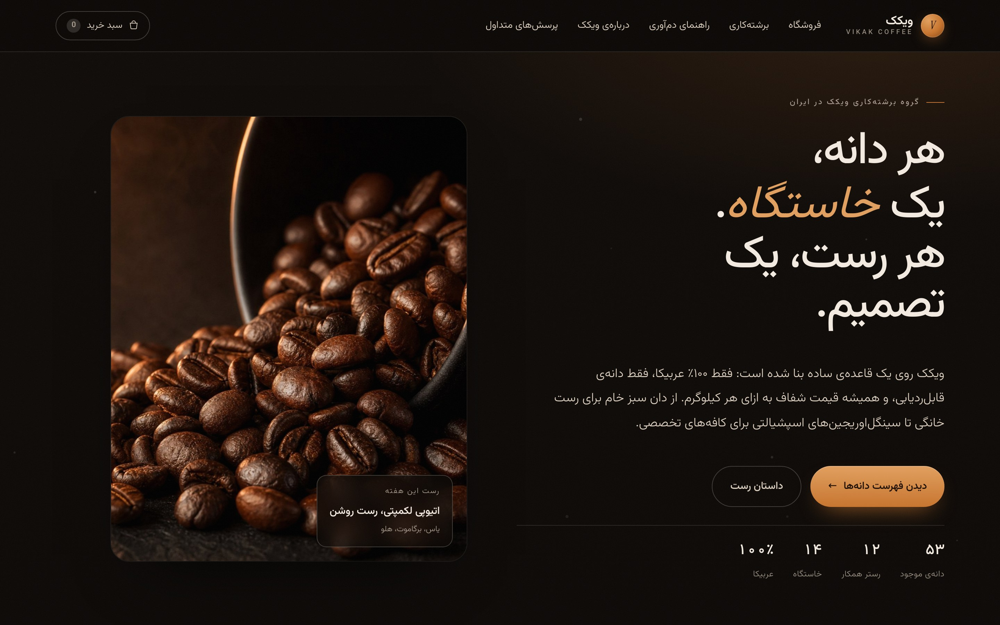
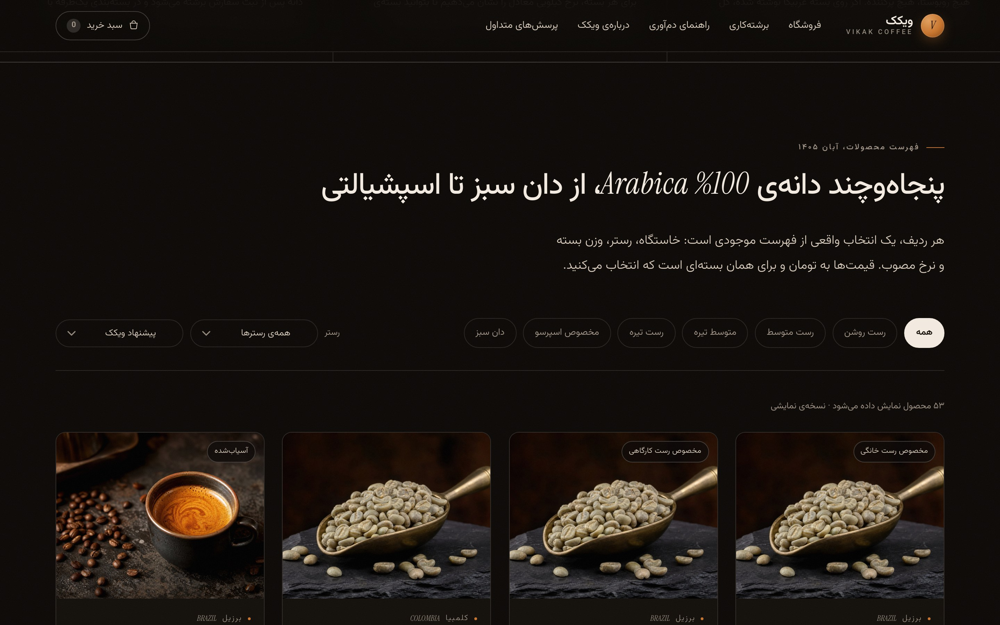
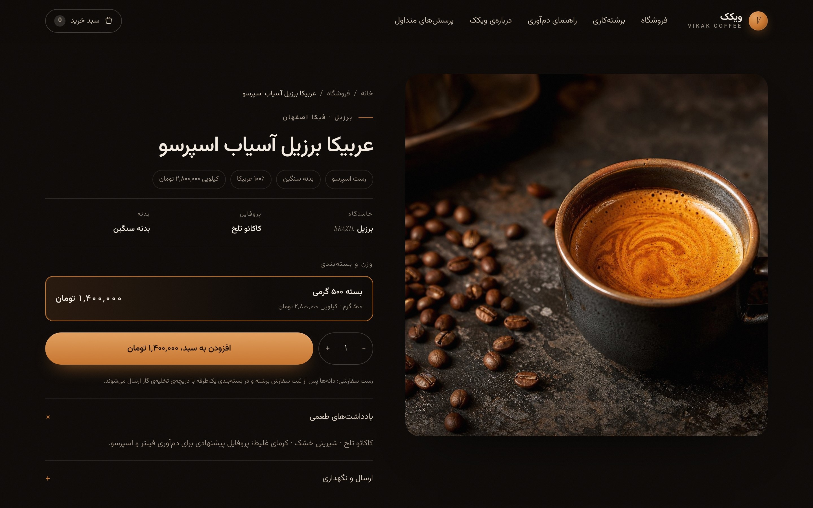
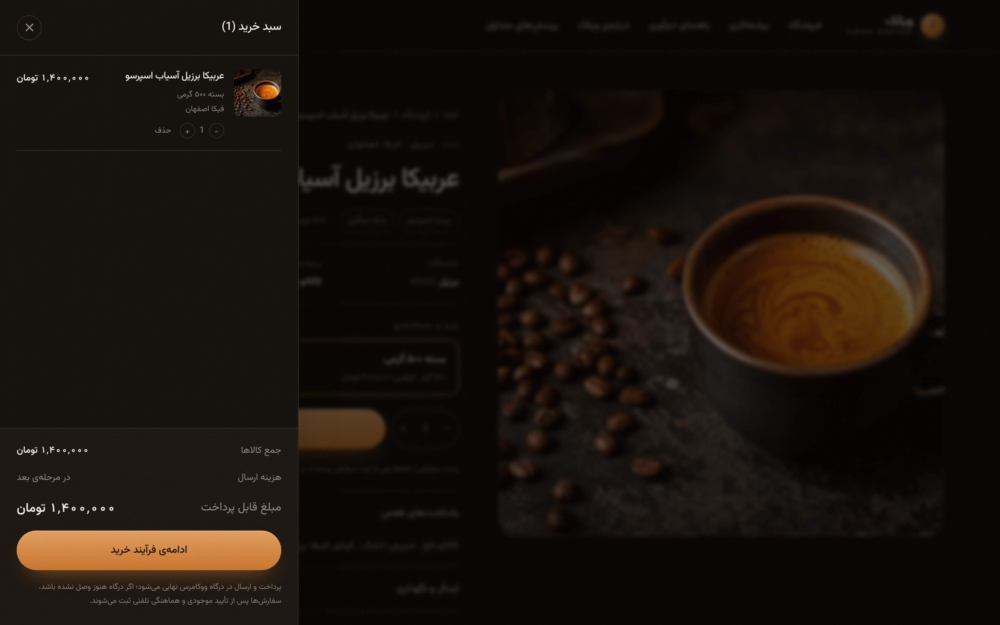
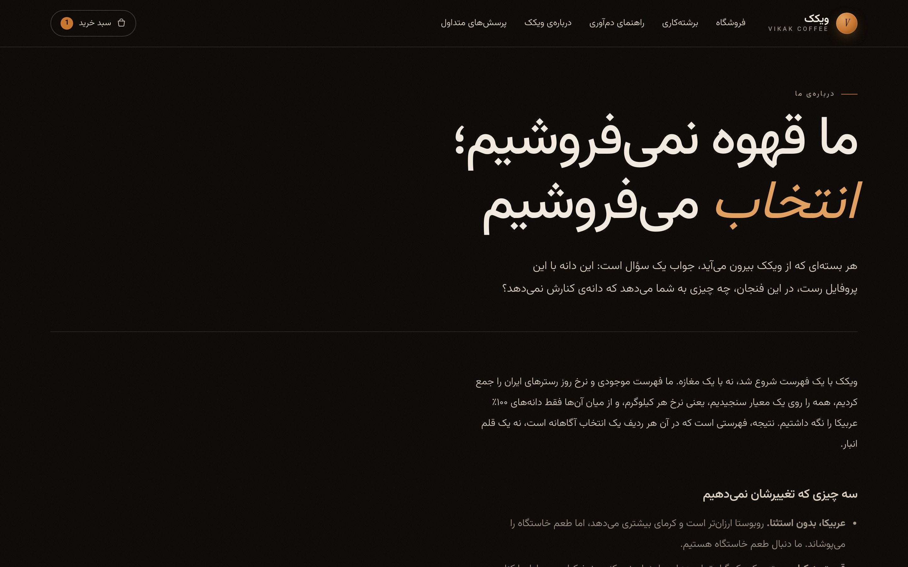
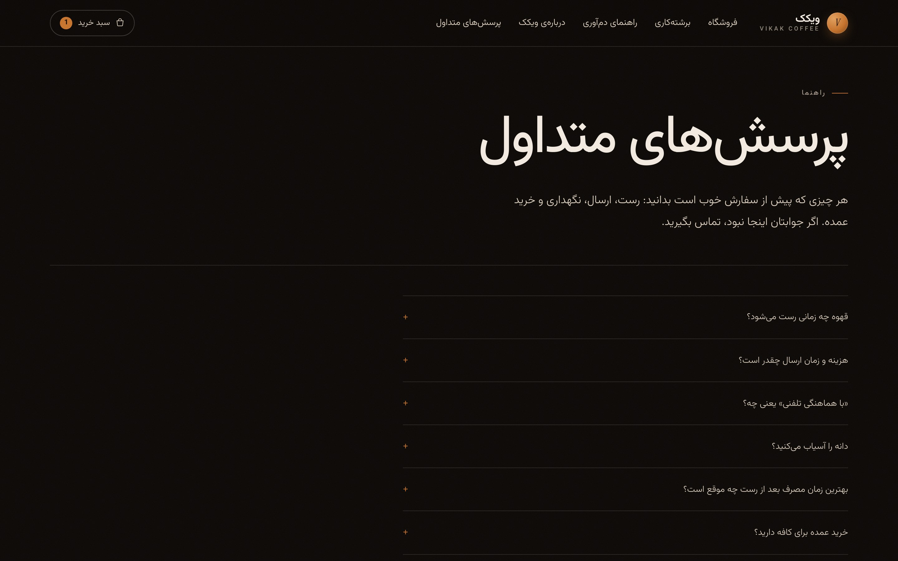

دسکتاپ
عرض ۱۴۴۰ پیکسل، رتینا. برای دیدن اندازهی کامل روی هر تصویر کلیک کنید.












موبایل
عرض ۳۹۰ پیکسل، رتینا ۳ برابر.


کیفیت و دسترسپذیری
اندازهگیریشده روی نسخهی اجراشده، نه ادعا.
پویش axe-core روی پنج صفحه (اصلی، کاتالوگ، محصول، درباره، پرسشها): صفر نقض، ۲۳ تا ۲۹ قاعده در هر صفحه با موفقیت پاس شد.
مسیرها، ارقام فارسی، دادهی کاتالوگ، رفتار در قطعی بکاند و صحت قیمتها، در هر بیلد اجرا میشود.
سرعت بالا و کارکرد بدون سرور؛ دامنهی نهایی هرچه باشد فقط یک متغیر تنظیمات عوض میشود.